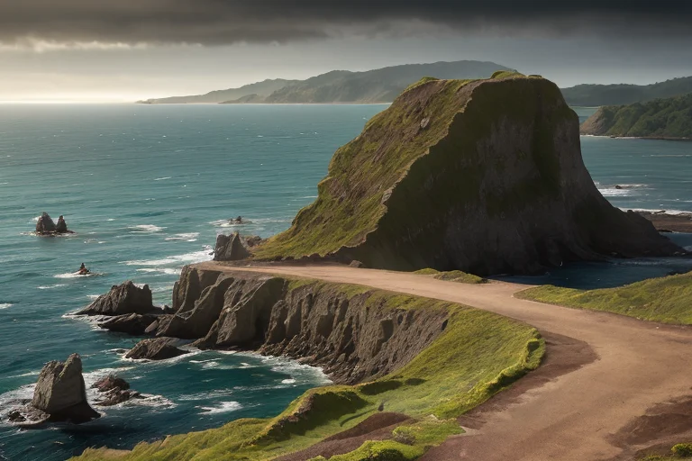
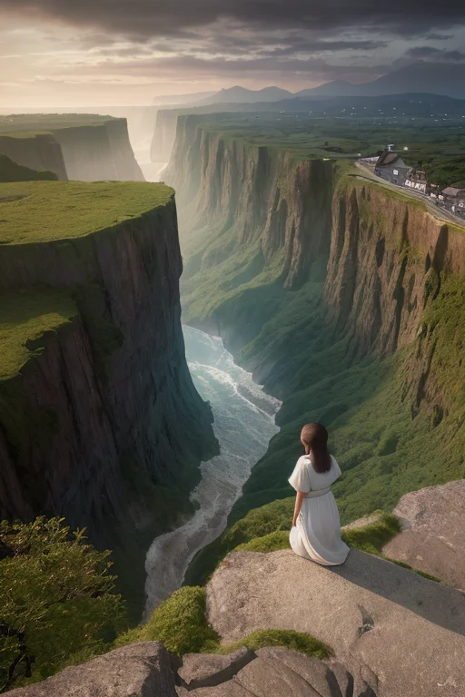
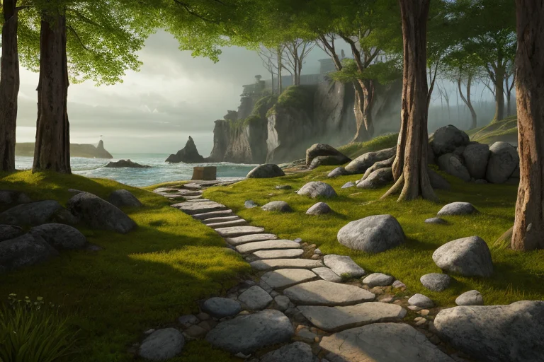
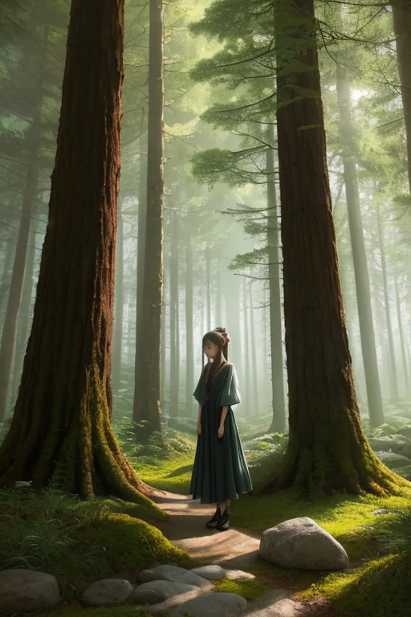
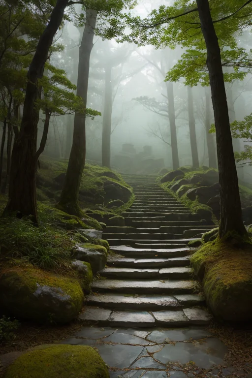

第一章 現実の福井
あなたはまだ気づいていない。この土地にも、王がいることを。
日本海の荒波が、柱状の岩肌・東尋坊を削り続ける。その足元で、山は静かに海へと沈み込み、境界は曖昧だ。三方五湖は、淡水と海水が混じり合う汽水域。ここは、常に「内」と「外」がせめぎ合う、狭間の土地である。
その地層の最深部で、王は目を覚ました。名はフクイア・ストラタ。古層と静観の王だ。彼の目には、この土地の重なりが見える。恐竜が跋扈した中生代の堆積、火山活動の痕跡、そして人間が築いた歴史の薄い層。すべてが押し潰されることなく、積み重なっている。
「古さは、停滞か土台か」
彼は無感情にその問いを内省する。彼の役割は、この積層のバランスを保ち、歪みが一気に崩れないよう微調整することだ。大地の軋みが増せば、それを一段階緩和する。海の圧力が高まれば、それを分散させる。英雄的な救済などない。ただ、積み重ねられた時間が無慈悲に崩落しないための、目立たない砥石である。
彼は動かない。境界に佇み、静観する。それが、この王国の在り方だった。

第二章 歪みの兆候
東尋坊の荒波が、いつもより激しく岩肌を砕いていた。日本海から押し寄せる気圧の谷が、海山境に微妙な負荷をかけている。フクイア・ストラタは断崖の上に立ち、その圧力を地層へと分散させていた。彼の足元では、ストラリスが地盤の微細な振動を監視し、ジュラミアが過去の類似データ──何万年も前の地滑りの記憶──を静かに提示する。
その時、新しい「歪み」が感知された。永平寺の森の静寂を揺るがす、異質な波動だった。観光客の増加、そしてSNSを通じた「聖地」としての集中。人々の想いや足音は無形の圧力となり、長年守られてきた禅の空間と、それを支える地質に、目に見えぬ負荷をかけ始めていた。古層は新しい波に曝される。
「増大する外部圧力」ジュラミアが報告する。データは、物理的な歪み以上に、場の「質」の変容を示していた。フクイアは眉をひそめる。これは単なる地盤の緩みではない。積み重ねられた時間の層そのものが、今という時代の速さに侵食されようとしている兆候だった。彼の内省が深まる。この変化を、単に「停滞」として遮断すべきか。それとも、新たな「土台」形成の過程として、静観すべきか。

第三章 王の葛藤
永平寺の深い杉木立は、変わらぬ静寂を湛えていた。しかしフクイアの内部では、激しい葛藤が渦巻いていた。ジュラミアの報告は、古層の侵食が加速していることを示す。それは物理的な歪み以上に、この地に蓄積された「時間の質」そのものが、外部からの新しい波によって希釈されつつあることを意味した。
「遮断すべきです」ストラリスの声は冷たい。「古層の純度が損なわれれば、地盤そのものが脆弱化します」
フクイアは東尋坊の荒波を見下ろした。激しく岩を砕く波は、侵食そのものの象徴だった。しかし、その侵食が作り出した奇岩の景観は、また新たな価値を生んでいた。彼は自問した。この変化を、古き良きものの「衰退」と見るべきか。それとも、古層が新たな層を受け入れ、より強固な「土台」へと変容する過程と見るべきか。
禅の教えは「不立文字」と言う。言葉に固執するな、と。彼は永平寺の庭を思い浮かべた。そこには、長い時間をかけて形作られた苔と石の調和があった。変化を完全に拒めば、それは確かに「停滞」となる。しかし、無秩序に全てを受け入れれば、調和は崩れる。
彼は決断した。完全な遮断も、無条件の受容も、しない。

第四章 妖精との対話
「層王様、あなたは迷っていますね。」
永平寺の深い杉林の中で、ジュラミアが静かに口を開いた。彼女の声は、堆積した地層そのもののように、時間の重みを含んでいた。
「この地は、常に『外』からのものを受け入れてきました。禅もそうです。大陸から来た思想が、この山に根付き、日本の心を形作った。恐竜の骨もそうです。遥か昔、海だったこの地に堆積し、今、『福井』という名の下で新たな物語を語り始めている。」
彼女は、掌に古い砂岩の欠片を乗せて見せた。
「受け入れ、咀嚼し、自らの層の一部とする。それが『土台』になるということです。完全な拒絶は脆い岩盤と同じ。かといって、何でもかんでも取り込めば、地層は乱れ、崩れやすくなる。選別と統合の繰り返し。それが、古さが新たな強さへと至る道筋です。」
フクイアは、東尋坊の荒波が絶えず岩を削り、しかし岩盤そのものは揺るがない様を思い浮かべた。
「停滞とは、選ぶことをやめること。土台とは、選び続けること。」
ジュラミアの言葉が、森の静寂に溶けていった。

第五章 微調整と余韻
永平寺の石段を、一人の若い僧が掃いていた。彼は故郷を離れ、この地に来て一年になる。異なる方言、厳しい戒律、自分とは全く異なる時間の流れ。時折、押し寄せる疎外感と、この場所の重厚な静けさの狭間で、彼は立ち止まることがあった。
フクイアは、その僧の足元のわずかな地盤の揺らぎを感じた。それは物理的なものではなく、心の動揺が土地の微細な「歪み」として伝わってくるものだ。王は手を触れず、僧が次の一歩を踏み出したその瞬間、石段の角に積もった一枚の水仙の花びらが、ほのかに光った。それは何の意味もない偶然の輝きだ。しかし僧は、その一瞬の煌めきに目を留め、ふと、幼い頃に祖母の庭で見た同じ花を思い出した。懐かしさという、どこかで繋がっている実感。それは答えではない。ただの、ほんの少しの手掛かり。
王は何も解決しない。巨大な災いを消し去る力はない。ただ、この土地に積もる無数の層──地質の記憶、人の歴史、文化の沈殿──のほんの一部を、今この瞬間に必要とする者の足元へと、そっと滑り込ませるだけだ。僧は花びらを見つめたまま、再び箒を動かし始めた。動作には、かすかだが確かな安定が加わっている。
あなたの町にも、王がいる。